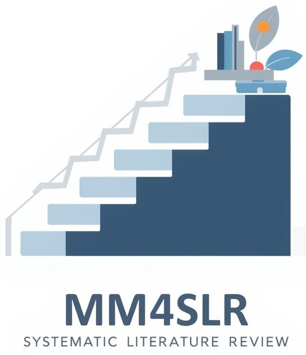

Welcome to the maturity model for systematic literature review process. Please,
access the top-left menu to navigate in the tool pages.
Why do we need a maturity model for SLR?
A maturity model for Systematic Literature Reviews (SLRs) is needed to provide researchers with a structured
framework that guides the progressive improvement of their review processes. SLRs are complex and
resource-intensive, and without clear benchmarks, researchers may struggle with issues such as lack of rigor,
inconsistent documentation, or unreliable results. A maturity model defines levels of process quality, from
basic execution to continuous optimization, helping researchers understand where their current practices stand
and what steps are necessary to enhance them. By offering a roadmap for systematic development, the model
promotes greater transparency, reproducibility, and reliability of SLRs, ultimately strengthening the quality
of evidence generated for the scientific community.
FAQ
The Maturity Model for Systematic Literature Reviews (MM4SLR) is a framework inspired by CMMI 2.0.
It defines six maturity levels (0–5) that represent how structured, rigorous, and optimized SLR
processes are.
The model guides researchers in evaluating their practices and progressively improving the quality of
their reviews.
Systematic reviews involve complex processes—planning, execution, quality assessment, and reporting—that
directly affect their validity. The maturity model provides a structured way to assess rigor, identify
gaps,
and establish priorities for improvement. It also allows comparability between different SLRs and serves
as a roadmap for better practices.
MM4SLR defines six levels of maturity:
- Level 0 - Incomplete: No systematization; results lack rigor.
- Level 1 - Performed: Basic execution with Planning (PP) and Documentation (RD), but
questionable reliability.
- Level 2 - Managed: Processes are documented and managed through Technical Support (TS),
with some quality control.
- Level 3 - Defined: Proactive quality assurance (PPQA) and Communication Management (CM)
minimize bias and improve collaboration.
- Level 4 - Quantitatively Managed: Processes use metrics and statistical analysis to measure
effort, sensitivity, and quality.
- Level 5 - Optimizing: Continuous improvement, focusing on efficiency, reproducibility, and
optimization of SLR practices.
The model is built upon three core concepts:
- Process Areas (PAs): Broad domains such as Planning (PP), Documentation (RD), Technical
Support (TS), Quality Assurance (PPQA), and Communication (CM).
- Specific Goals (SGs): Objectives that each PA should achieve.
- Key Practices (KPs): Concrete actions researchers can implement to satisfy the SGs and
advance maturity levels.
Together, they provide a structured path for systematically improving SLR processes.
Current SLR literature does not yet address quantitative management (Level 4) or optimization (Level 5)
in a
systematic way. Assigning PAs to these levels would be speculative. Future research should define
metrics
(e.g., productivity, reproducibility, transparency) to enable structured measurement and optimization.
Researchers can perform a self-assessment by mapping their SLR processes against the KPs and PAs defined
at
each maturity level. The level that best matches their current practices indicates their maturity stage,
while higher levels point to improvement opportunities.
Yes. MM4SLR is a living framework. As new practices, tools, and metrics for SLRs emerge, the model can
be
updated to refine maturity levels, incorporate new PAs, and better support the research community.
Yes. Please refer to the official publication or documentation of MM4SLR for citation details. Proper
citation also contributes to its dissemination and validation within the research community.
Systematic Literature Reviews Guidelines
-
Kitchenham, B.; Charters, S. - Guidelines for Performing Systematic Literature Reviews in Software
Engineering (EBSE-2007-01)
-
Brereton, P.; Kitchenham, B.; Budgen, D.; Turner, M.; Khalil, M. - Lessons from Applying the
Systematic Literature Review Process within the Software Engineering Domain
-
Wohlin, C. - Guidelines for Snowballing in Systematic Literature Studies and a Replication in
Software Engineering
-
Wohlin, C.; Mendes, E.; Romero Felizardo, K.; Kalinowski, M. - Guidelines for the Search Strategy to
Update Systematic Literature Reviews in Software Engineering
-
Kitchenham, B.; Budgen, D.; Brereton, P. - Evidence-Based Software Engineering and Systematic
Reviews (book)